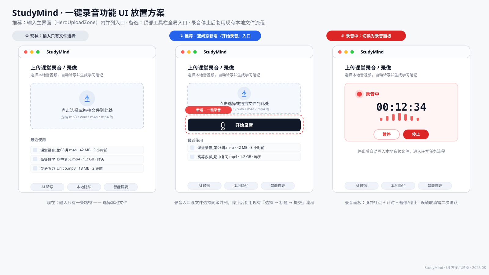

核心结论：录音入口放在「等待输入」主界面的 HeroUploadZone 内，与「选择本地文件」并列为两种输入方式；录音停止后把音频写入本地临时文件，复用现有「选文件 → 填标题 → 提交」管线，下游转写与 AI 流程零改动。
录音在用户心智里是「开始一个新任务」的动作，与上传文件属于同一意图层次。当前 hero 区已经是「点击 / 拖拽 / 最近使用」的输入中枢，把录音入口放在这里，用户一进来就能看到两种开始方式，符合「同层级输入方式并排」的原则，且不需要为录音单独设计导航路径。
| 位置 | 推荐度 | 优点 | 缺点 / 风险 |
|---|---|---|---|
| A. Hero 上传区内（拖拽区下方加「开始录音」按钮） | 首选 | 与上传文件并列，符合「开始新任务」心智；录完直接进入已有选择/提交流程；改动集中在单个组件 | 需要设计录音中状态（面板切换）；hero 区内容增多，需控制视觉层级 |
| B. 顶部工具栏（topbar 右侧，更新按钮旁） | 备选 | 全局可达，任何页面（含转写/复习页）都能随时录 | 录音是「新任务输入」，放全局会割裂主流程；录完不知归属哪一步；工具栏空间有限，与更新 chip 挤在一起；桌面 app 顶部还有拖拽区域约束 |
| C. 侧边栏（新话题按钮附近加麦克风图标） | 不推荐 | 侧边栏是任务导航区，看起来「顺路」 | 侧边栏职责是导航/历史，放输入动作违背职责分离；折叠态只剩图标，发现性差；未登录时不渲染侧边栏，入口直接消失 |

上传区仍是主 CTA（点击/拖拽），录音按钮作为其下方的描边/深色次要按钮，带麦克风图标 + 文字「开始录音」，避免与文件选择抢主视觉。
hero 区切换为录音面板：脉冲红点 +「录音中」标签 + 等宽字体计时 + 波形动画 + 暂停/停止按钮。状态变化有明确视觉反馈。
停止后把录音写入本地临时音频文件（m4a/wav），调用现有 selectLocalMediaByPath，自动进入「已选文件 → 填标题 → 提交」状态，并写入「最近使用」。
hero 显示「选择文件」大区 + 下方「开始录音」入口（麦克风图标按钮，aria-label 必填）
首次使用走系统授权；拒绝时在面板内展示错误提示与重试/前往设置路径，不弹裸系统框
面板展示计时 + 波形 + 暂停/恢复；停止按钮变为主操作；提供「放弃录音」入口（需二次确认或 toast 撤销，防误触丢失）
音频写入临时目录（经 Tauri 侧），调用 selectLocalMediaByPath 完成校验与 token 登记
hero 呈现「已选文件」状态：文件名、时长、大小，可改名、替换、移除、提交 —— 与上传文件完全一致
idle 分支新增录音入口；新增 recording 状态与面板；新增「已选录音」展示（时长字段）
封装录音逻辑（MediaRecorder/后端录音桥）、计时、波形、暂停/停止/放弃；独立便于测试
新增「保存录音到临时文件」能力，返回路径后复用 selectLocalMediaByPath；同时登记 useRecentMedia
新增 input.record.* 文案（开始录音 / 录音中 / 暂停 / 停止 / 放弃 / 权限错误等）
提交、转写管线、任务状态机、AI 摘要 —— 录音只是新增了一种输入来源，下游全部复用
aria-label 与键盘可达（桌面 app 需支持 Enter/Space 触发、Esc 放弃）；录音状态不能只靠红色表达，需配文字「录音中」。Ctrl/Cmd + Shift + R）随时唤起录音，作为 hero 入口的补充而非替代。